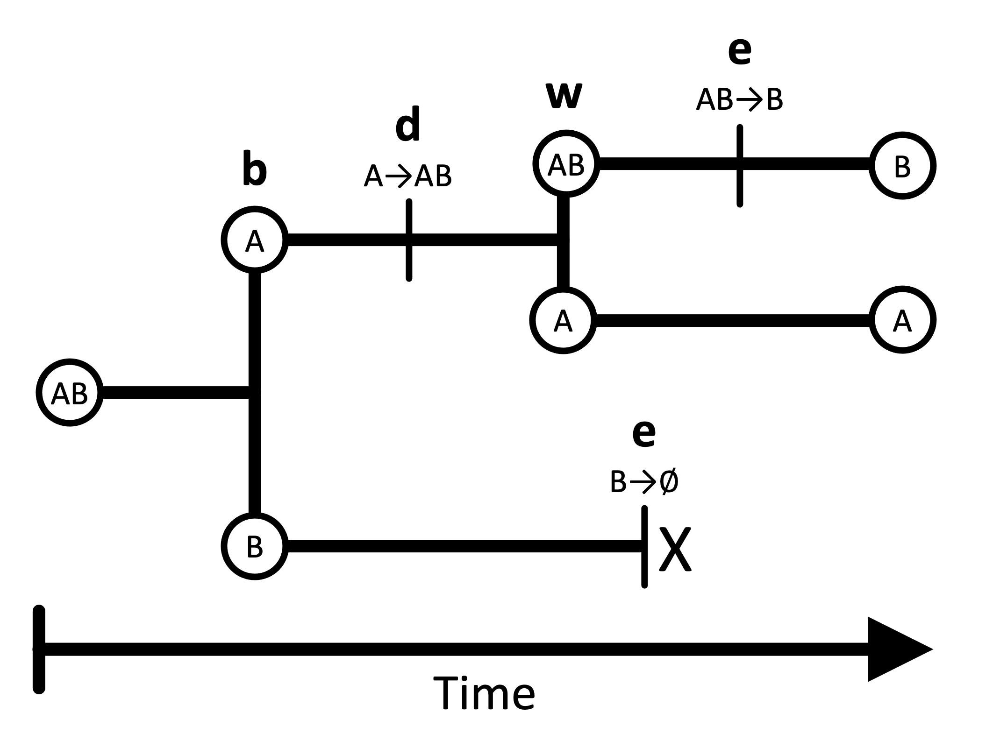
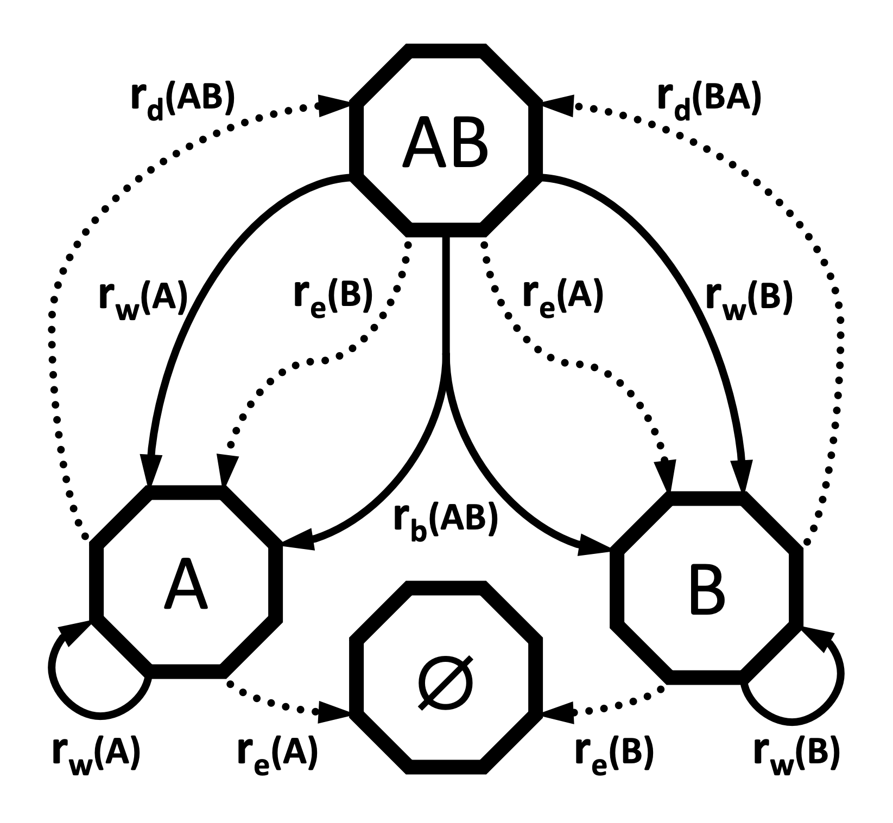

Haz clic en la imagen para ver el PDF de la presentación
Introducción
El modelo GeoSSE (Geographic State Speciation and Extinction) es un modelo filogenético diseñado para estudiar cambios biogeográficos a lo largo del tiempo evolutivo (Goldberg et al. 2011). Este modelo permite explorar cómo las tasas de diversificación (especiación y extinción) y de dispersión varían entre diferentes regiones geográficas.
En GeoSSE, el “estado” de un linaje representa su rango geográfico, el cual puede estar compuesto por una o más regiones discretas. Por ejemplo, en un escenario con dos regiones (A y B), hay tres rangos geográficos posibles: A, B, y AB.
Los linajes pueden dividirse y cambiar de estado a lo largo del tiempo evolutivo mediante cuatro procesos fundamentales:
Especiación entre regiones (b).- Este evento ocurre cuando una especie con un rango amplio (por ejemplo, AB) se divide en dos especies, cada una ocupando una sola de las regiones. Por ejemplo, el ancestro con rango AB se divide en especies hijas con rangos A y B. Este proceso es simétrico: la separación entre A y B es equivalente a la separación entre B y A.
Dispersión entre regiones (d).- La dispersión permite que una especie expanda su rango geográfico hacia una nueva región. La tasa de expansión es la suma de las tasas de dispersión entre cada par de regiones. Por ejemplo, una especie con rango A que se dispersa hacia B terminará con rango AB.
Especiación dentro de una región (w).- Este evento genera dos linajes hijos, donde uno hereda todo el rango ancestral (que puede ser una o más regiones), y el otro hereda una sola región del rango ancestral. Por ejemplo, si la especie ancestral tenía el rango AB, una hija podría conservar AB, mientras que la otra tendría A.
Extinción local (extirpación) (e).- La extinción hace que una especie pierda una región de su rango geográfico. Por ejemplo, una especie con rango AB puede extinguirse en la región A, quedando con rango B.

La especiación dentro de una región y la especiación entre regiones son procesos cladogenéticos que generan nuevos linajes filogenéticos. Estos eventos pueden resultar en especies hijas que ocupan rangos diferentes al de la especie ancestral.
La extinción y la dispersión, en cambio, son procesos anagenéticos que ocurren a lo largo de las ramas del árbol filogenético. La extinción y la especiación dentro de regiones ocurren en una sola región, mientras que la dispersión y la especiación entre regiones involucran dos o más regiones.
⚠️ Nota: El modelo estándar de GeoSSE no permite otros tipos de eventos evolutivos. Por ejemplo, no se permite que una especie ancestral con un rango amplio produzca dos hijas que ambas conserven el rango completo. Además, GeoSSE solo permite que ocurra un único evento por instante de tiempo.
Diagrama de transición

El diagrama de transición del modelo GeoSSE para dos regiones resume los cuatro procesos fundamentales:
Procesos anagenéticos: extirpación y dispersión, representados con flechas punteadas.
Procesos cladogenéticos: especiación dentro de regiones y especiación entre regiones, representados con flechas continuas.
Este diagrama permite visualizar primero qué puede ocurrir con un linaje. A continuación veremos cómo se parametrizan esas posibilidades en RevBayes.
Parámetros del modelo GeoSSE
El modelo GeoSSE considera cuatro familias de tasas elementales:
rw: especiación dentro de una región.
re: extinción local o extirpación.
rb: especiación entre regiones.
rd: dispersión entre regiones.
Aquí hablamos únicamente de cómo se organizan las tasas elementales por región o por pares de regiones. Más adelante, RevBayes utilizará estas tasas para construir estructuras de nivel superior como Q_bg, clado_map, lambda y omega.
En este ejemplo tenemos dos regiones geográficas:
Regiones
A B
pero tres posibles estados de distribución para un linaje:
A B AB
10 01 11
Es importante distinguir ambos niveles:
A y B son regiones geográficas.
A, B y AB son estados de distribución de los linajes.
Especiación dentro de una región: rw
La tasa rw está asociada a una región individual.
Para dos regiones tenemos:
rw(A)
rw(B)
Por ejemplo:
A
│
●
/ \
A A
rw(A)
y:
B
│
●
/ \
B B
rw(B)
Si el ancestro ocupa ambas regiones, una especiación dentro de una región también puede producir:
AB
│
●
/ \
A AB
o:
AB
│
●
/ \
B AB
Como necesitamos una tasa por región, rw se organiza como un vector:
UNA REGIÓN
│
├── rw
└── re
DOS REGIONES
│
├── rb par A-B, sin dirección
└── rd A→B o B→A, con dirección
NoteTasas elementales ≠ estructuras finales del modelo
La clasificación anterior describe solamente cómo están organizadas rw, re, rb y rd.
Después, RevBayes transforma y combina esas tasas:
TASAS ELEMENTALES
│
├── re + rd
│ │
│ ▼
│ Q_bg
│ matriz de transición
│ entre estados A, B y AB
│
└── rw + rb
│
▼
clado_map
mapa de eventos de
especiación
│
├── lambda
│ vector de tasas
│ totales por estado
│
└── omega
probabilidades de
resultados cladogenéticos
Por lo tanto, que re sea un vector y rd una matriz no significa que el componente anagenético completo sea un vector o una matriz del mismo tipo. Ambos se combinan para construir Q_bg, que opera sobre los estados de distribución A, B y AB.
De manera análoga, rw y rb alimentan clado_map, del cual se derivan posteriormente lambda y omega.
GeoSSE como modelo SSE
El modelo GeoSSE forma parte de una clase más amplia de modelos conocidos como modelos SSE (State-dependent Speciation and Extinction). Estos modelos permiten que el estado de un carácter discreto influya en las tasas de especiación, extinción y transición entre estados.
Aquí rho_w define la escala general de la especiación dentro de regiones y m_w reparte esa escala entre A y B. El resultado r_w contiene una tasa para cada región.
Ahora definimos la tasa de extinción completa del linaje para cada rango:
for (i in1:num_ranges) { mu[i] <-0.0if (i <= num_regions) { mu[i] := r_e[i] }}
Aquí conviene distinguir dos niveles:
r_e describe la pérdida de una región.
mu contiene la tasa de extinción completa del linaje para cada estado.
Por eso, para un rango amplio como AB, mu=0: perder solo A o solo B no elimina al linaje, sino que produce una transición de rango que será representada en Q_bg.
A diferencia de la especiación entre regiones, la dispersión puede ser asimétrica:
[ d_{A,B} d_{B,A} ]
En dispersión se recorren pares dirigidos: A → B y B → A. Por eso m_d_simplex contiene un peso para cada dirección. m_d_idx++ usa el elemento actual y después avanza al siguiente.
De las tasas elementales a las estructuras del modelo
Hasta aquí hemos definido tasas por región o por pares de regiones. A partir de este punto, RevBayes las combina para trabajar directamente con los estados de distribución A, B y AB.
Q_bg combina r_d y r_e en una matriz de transición entre estados de distribución. En nuestro ejemplo, esos estados son A, B y AB. Por tanto, Q_bg ya no está organizada simplemente por regiones A y B, sino por los tres estados posibles del rango.
Podemos revisar cómo RevBayes representa los rangos:
Por ejemplo, Q_bg permite transiciones como A → AB por dispersión o AB → A por extirpación en B. Los eventos de los nodos se especifican por separado mediante clado_map.
clado_map combina la información de rw y rb para enumerar los resultados de especiación permitidos para cada estado ancestral. Conceptualmente, cada evento depende de un estado ancestral y de los estados de sus dos descendientes.
lambda: tasa total de especiación para cada estado ancestral.
omega: probabilidades relativas de los distintos resultados cladogenéticos, dado que ocurre una especiación.
Interpretación de clado_map, lambda y omega
La función fnBiogeographyCladoEventsBD(...)construye un mapa de eventos de especiación permitidos y sus tasas, no una lista de eventos históricos que ya hayan ocurrido. Sus argumentos cumplen funciones distintas:
Argumento
¿Qué controla?
speciation_rates=[rho_w,rho_b]
Escalas base de especiación dentro de regiones y entre regiones
within_region_features=m_w
Heterogeneidad de especiación dentro de regiones
between_region_features=m_b
Heterogeneidad de separación entre pares de regiones
max_range_size=num_regions
Tamaño máximo del rango ancestral representado
max_subrange_split_size=num_regions
Tamaño máximo de subrangos descendientes admitidos por la función
Ahora fijamos el modelo a nuestros datos observados:
timetree.clamp(phy)timetree.clampCharData(bg_dat)
Relación entre parámetros, filogenia y muestreo
El análisis combina: Q_bg, que describe cambios anagenéticos de rango; lambda, que define las tasas totales de especiación; omega, que define cómo se distribuyen los resultados cladogenéticos; y mu, que participa en la extinción completa de linajes. timetree.clamp(phy) fija la filogenia observada, mientras timetree.clampCharData(bg_dat) fija los rangos observados en las puntas.
En el argumento rho=1 de dnGLHBDSP sí hablamos de una fracción de muestreo taxonómico de 100 % bajo el supuesto del ejercicio; no debe confundirse con las variables rho_w, rho_e, rho_b y rho_d de tasas base.
Configuración de la MCMC
# MCMC SETUPn_gen =1000n_burn =100printgen =10
Nota: Esta MCMC es corta y se utiliza únicamente con fines de práctica.
Movimientos de la MCMC
# MCMC MOVESmv =VectorMoves()mvi =1mv[mvi++] =mvScale(rho_w, weight=1)mv[mvi++] =mvScale(rho_e, weight=1)mv[mvi++] =mvScale(rho_b, weight=1)mv[mvi++] =mvScale(rho_d, weight=1)mv[mvi++] =mvSimplex(m_e_simplex, weight=m_e.size())mv[mvi++] =mvSimplex(m_w_simplex, weight=m_w.size())# Con dos regiones, m_b_simplex tiene una sola componente [1],# por lo que no presenta grados de libertad para proponer cambios.if (m_b_simplex.size() >1) { mv[mvi++] =mvSimplex(m_b_simplex, weight=m_b_simplex.size())}mv[mvi++] =mvSimplex(m_d_simplex, weight=m_d_simplex.size())
La expresión:
mv[mvi++]
usa el valor actual de mvi como índice y después aumenta mvi en uno.
usa el índice actual de mni y luego lo incrementa.
Guardar las etiquetas de los estados
# STATE LABELSwrite("index,range\n",file=lbl_fn)state_labels =Q_bg.getStateDescriptions()for (i in1:state_labels.size()) {write( (i-1),",", state_labels[i],"\n",file=lbl_fn,append=true,separator="" )}
Este bloque genera automáticamente:
output/kadua_range_label.txt
con una estructura como:
index,range
0,10
1,01
2,11
Por lo tanto, este archivo no es un dato de entrada.